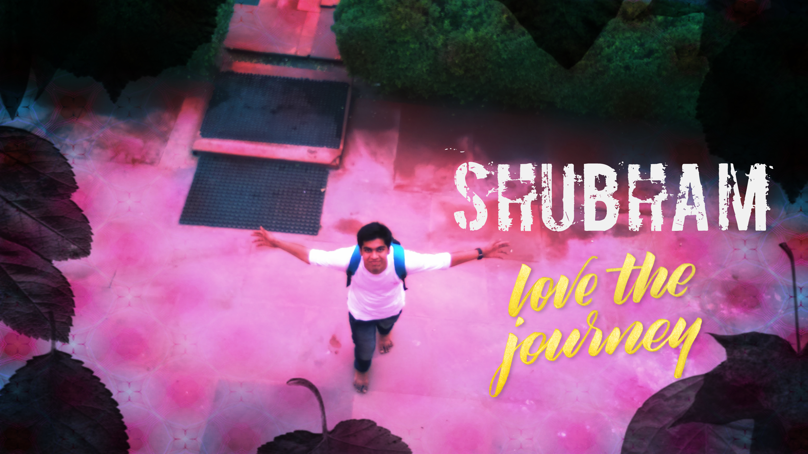

Introduction

Hello Everyone, My name is Shubham Kumar and I am from
Sitamarhi,Bihar(also known as birth place of Maa Sita). At present I
am pursuing my Bachelor of computer Science and Engineering an
Lovely Professional University.
I am currently in 3rd year and my major is Cybersecurity. I like to
do various stuffs realted to computer science. In my free time I
love to make small projects, gather information about latest
technology and also love to do read technical books.
Apart from studies, I have keen interest in walking with friends in
evening. I love nature very much and I like to visualise and admire
its beauty whenever I am free.
Like everyone, I also have chosen some of my dreams. I want to live
a happier life along with my family at my sweet home. I want to make
an Operating System in which each and every softwares is created by
either me or my friends.
Eduational History
Primary and Secondary Eduation
I did my primary eduation in Vidya Bharti till class 6th. After that
I went to Vidya Niketan and finshed my eduation upto class 8th there
and after that I studied in Shanti Niketan Preparation Point.
Higher Secondary Education
For Higher Secondary Education I took admission in Jesus and Mary
Academy. I did my matriculation in 10 from there with a CGPA of 9.4.
Seniour Seconday Education
For Seniour Secondary Education , I took admission in pt. D.D.U.M
college. I did my 12th and passed with 62.6%. Apart from this I also
took coaching at Bansal Classes Private Limited for Bull's Eye(11th)
, Nucleus(12th) and Sterling(13th) in Rajasthan.
Family Background
I have been brought-up in a very discipline atmosphere where values
and principles have always been given priority.There are four
members in my family including me. First of all my respected father
Shree Kaushlendra Kumar who is Advocate at District Civil Court
Sitamarhi, Then my lovely mother Smt. Babita Thakur. She is house
maker. After that my elder brother Rahul Kumar who has just
completed his Bachelor of Civil Engineering and about to start his
further study for master in Civil Engineering.